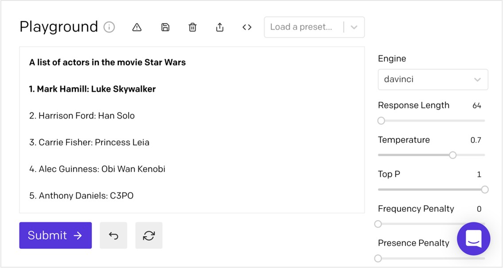
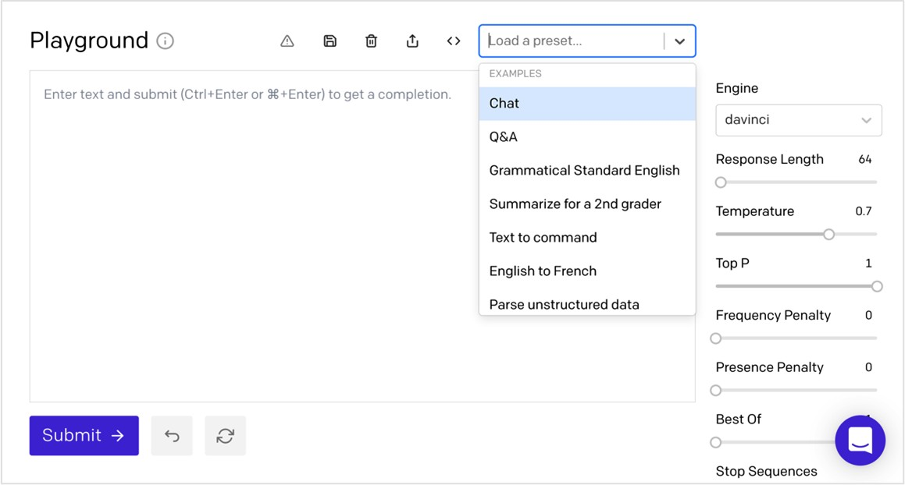
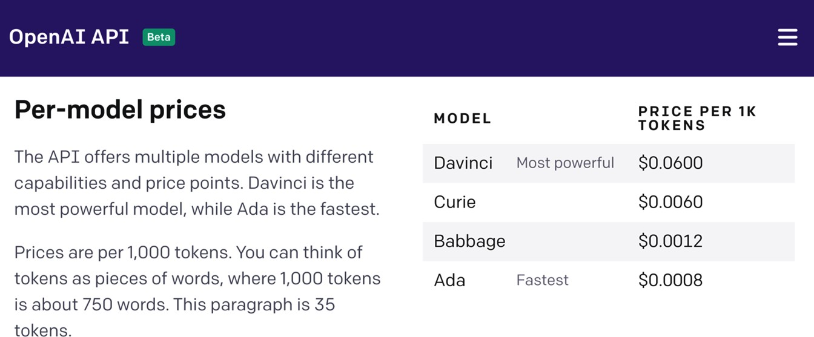

1 GPT-3 및 OpenAI API 소개
2020년 6월 11일, 선도적인 인공지능(AI) 연구소인 OpenAI의 블로그 게시물에서 생성형 사전 학습 트랜스포머
버전 3(GPT-3)에 대한 논의가 시작되었습니다. 게시물은 다음과 같이 시작되었습니다:
OpenAI에서 개발한 새로운 AI 모델에 액세스할 수 있는 API를 출시합니다. 특정 사용 사례에 맞게 설계된 대부분의 AI 시스템과 달리, 이 API는 범용 '텍스트 입력, 텍스트 출력' 인터페이스를 제공하므로 사용자는 거의 모든 영어 작업에 사용해 볼 수 있습니다.
곧이어 초기 베타 테스터들의 온라인 데모가 이어졌는데, 일부는 믿기 어려울 정도로 훌륭해 보였습니다. GPT-3는 기사를
작성하고, 시를 쓰고, 질문에 답하고, 실제와 같은 응답으로 채팅을 하고, 한 언어에서 다른 언어로 텍스트를
번역하고, 복잡한 문서를 요약하고, 심지어 코드를 작성했습니다. 데모는 매우 인상적이었습니다. 범용 AI 시스템에서는 볼 수 없었던 놀라운 기능들이었지만, 그보다 더
인상적인 것은 데모 중 상당수가 AI 및 머신러닝(ML)에 대한 공식적인 배경 지식이 없거나 제한적인 사람들이 만들었다는
점이었습니다. GPT-3는 기술적인 측면뿐 아니라 AI 접근성
측면에서도 한 차원 높은 수준을 보여주었습니다.
GPT-3는 거의 모든 사람이
몇 분 안에 이해하고 사용할 수 있는 범용 언어 처리 AI 모델입니다.
컴퓨터 공학 박사 학위가 없어도, 코드를 작성하는 방법을 몰라도 사용할 수 있습니다. 사실, 시작하는 데 필요한 모든 것이 이 책에 있습니다. 이 장에서는 다음 주제부터 시작하겠습니다:
• GPT-3 소개
• NLP의 대중화
• 프롬프트, 완료 및 토큰 이해하기
• 다빈치, 베이비지, 퀴리, 에이다를 소개합니다.
• GPT-3 위험 이해
기술 요구 사항
이 챕터를 사용하려면 OpenAI API(애플리케이션 프로그래밍 인터페이스)에 대한 액세스 권한이 필요합니다.
https://openai.com/ 을 방문하여 API 액세스를
등록할 수 있습니다.
GPT-3 소개
간단히 말해, GPT-3는 일련의 단어에 대한 확률 분포를 계산하는 통계적 모델인 언어 모델입니다. 즉, GPT-3는 텍스트가 입력으로 주어졌을 때 다음에 어떤 텍스트가
나올지 추측하는 시스템입니다.
이제 GPT-3가
무엇인지 자세히 알아보기 전에 자연어 처리(NLP)에 대해 간략하게 소개(또는
복습)해 보겠습니다.
NLP 간소화
NLP는 다양한 컴퓨팅 애플리케이션에 자연스러운 인간 언어를 사용하는
데 중점을 둔 AI의 한 분야입니다. NLP는 감성 분석, 음성 인식, 기계 번역, 텍스트
생성, 텍스트 요약 등 다양한 유형의 언어 처리 작업을 포괄하는 광범위한 범주입니다.
NLP에서 언어 모델은 일련의 단어에 대한 확률 분포를 계산하는 데
사용됩니다. 언어 모델은 인간 언어의 매우 복잡하고 미묘한 특성 때문에 필수적입니다. 예를 들어, 전액 지불과 고통스럽다 또는 티타임과 티타임은 비슷하게 들리지만 그 의미는 매우 다릅니다. '그녀는 불타고 있다'와 같은 문구는 문자 그대로
또는 비유적으로 표현될 수 있으며, '크다'와 '큰'과 같은 단어는 어떤 경우에는 같은 의미로 사용될 수 있지만 다른 경우에는 그렇지 않을 수 있습니다(예: 형을 지칭하기 위해 큰이라는 단어를 사용하는 것과 큰이라는 단어를 사용하는 것은 같은 의미가 아닙니다). 따라서 이러한 복잡성을 처리하기 위해 언어 모델을 사용하지만 말처럼 쉬운 일은 아닙니다.
단어의 의미와 적절한 사용법을 이해하는 것은 인간에게는 사소한
일처럼 보이지만, 기계에게는 NLP 작업이 어려울 수 있습니다. 특히 아이러니나 풍자 인식과 같은 복잡한 언어 처리 작업의 경우, 때로는
인간에게도 어려운 과제일 수 있습니다.
오늘날 특정 NLP 작업에 가장 적합한 기술적 접근 방식은 작업에 따라 달라집니다. 따라서 대부분의 최고 성능의 최첨단(SOTA) NLP 시스템은 단일 목적 또는 좁은 범위의 작업을 위해 미세 조정된
특수 시스템입니다. 하지만 이상적으로는 단일 시스템으로 모든 NLP 작업을
성공적으로 처리할 수 있어야 합니다. 이것이 바로 GPT-3의
목표입니다. NLP를 위한 범용 AI 시스템을 제공하는 것입니다. 따라서 오늘날 최고 성능의 NLP 시스템은 특수 목적의 특수 시스템인 경향이 있지만, GPT-3는 여러 일반적인 NLP 작업에서 SOTA 성능을 달성하여 모든 NLP 작업에 대해 SOTA 성능을 제공할 수
있는 미래의 범용 NLP 시스템의 잠재력을 보여줍니다.
GPT-3란 정확히 무엇인가요?
GPT-3는 범용 NLP 시스템이지만, 실제로는 입력으로 제공된
텍스트를 기반으로 다음에 나올 내용을 예측하는 한 가지 기능만 수행합니다. 하지만 올바른 아키텍처와
충분한 데이터만 있다면 이 한 가지 기능만으로도 놀라운 언어 처리 작업을 처리할 수 있다는 것이 밝혀졌습니다.
GPT-3는 OpenAI의
세 번째 버전의 GPT 언어 모델입니다. 따라서 2020년 여름부터 대중화되기 시작했지만, 첫 번째 버전의 GPT는 2년 전에 발표되었고 다음 버전인 GPT-2는 2019년 2월에
발표되었습니다. 하지만 GPT-3는 세 번째 버전이지만 일반적인
시스템 설계와 아키텍처는 GPT-2에서 크게 달라지지 않았습니다. 하지만
한 가지 큰 차이점이 있는데, 바로 훈련에 사용되는 데이터 세트의 크기입니다.
GPT-3는 인터넷, 서적
및 기타 출처의 텍스트로 구성된 약 570억 개의 단어와 1,750억
개의 매개변수가 포함된 방대한 데이터 세트로 학습되었습니다. 이는
GPT-2와 그 다음으로 큰 언어 모델보다 10배나 큰 규모입니다. 모델 크기를 원근법으로 계산하면 평균적인 인간은 평생 동안 10억
개 이상의 단어를 읽고, 쓰고, 말하고, 들을 수 있습니다. 따라서
GPT-3는 대부분의 인간이 처리할 단어 수의 약 57배에 달하는 단어로 학습되었습니다.
GPT-3 언어 모델은 방대하기 때문에 노트북에서 다운로드하여 사용할 수
없습니다. 설령 다운로드할 수 있다고 해도(다운로드할 수
없기 때문에 불가능하지만) 모델을 구축할 때마다 수백만 달러의 컴퓨팅 리소스가 필요합니다. 따라서 자체 컴퓨터 리소스에 의존해야 한다면 대부분의 소규모 기업이나 거의 모든 개인이 GPT-3를 사용할 수 없습니다. 다행히도 그럴 필요가 없습니다. OpenAI는 저렴하고 사용하기 쉬운 API를 통해 GPT-3를 제공합니다. 따라서 누구나 현존하는 가장 진보된 AI를 사용할 수 있습니다!
NLP의 대중화
OpenAI API에 액세스하면 누구나
GPT-3를 사용할 수 있습니다. 이 API는
거의 모든 언어 작업에 사용할 수 있는 범용 텍스트 입력, 텍스트 출력 인터페이스입니다. API를 사용하려면 텍스트를 전달하고
텍스트 응답을 받기만 하면 됩니다. 감성 분석, 기사 작성, 질문에 대한 답변, 문서 요약 등의 작업을 수행할 수 있습니다. API에 관한 한, 모든 작업이 동일한 방식으로 수행되므로 프로그래머가
아니더라도 누구나 쉽게 사용할 수 있습니다.
입력하는 텍스트를 프롬프트라고
하고, 반환된 텍스트를 완료라고 합니다. 프롬프트는
GPT-3에서 작업을 완료하는 가장 좋은 방법을 결정하는 데 사용됩니다. 가장 간단한 경우
프롬프트는 시작하기 위한 몇 단어를 제공할 수 있습니다. 예를 들어 프롬프트가 오늘이 월요일, 내일이 화요일인 경우 GPT-3는 오늘이 화요일, 내일이 수요일 등과 같은 추가 텍스트와 함께 화요일로 응답할 가능성이 높습니다. 즉, GPT-3에서 얻을 수 있는 내용은 사용자가 보내는 내용에 따라 달라집니다.
짐작할 수 있듯이 완성도의 품질은 프롬프트에 따라 크게 달라집니다. GPT-3는 프롬프트의 모든 텍스트를 사용하여 가장 관련성 높은 완성을 생성합니다. 프롬프트의 구조와 함께 모든 단어는 언어 모델 예측
결과를 개선하는 데 도움이 됩니다. 따라서 프롬프트를 작성하고 테스트하는 방법을 이해하는 것이 GPT-3의 진정한 잠재력을 발휘하는 열쇠입니다.
프롬프트, 완료 및
토큰 이해하기
말 그대로 어떤 텍스트든 프롬프트로 사용할 수 있습니다. 어떤 텍스트를 보내면 어떤 텍스트가 돌아오는 식입니다. 하지만 임의의
문자열로 GPT-3가 어떤 작업을 수행하는지 보는 것도 재미있지만, 진정한
힘은 효과적인 프롬프트를 작성하는 방법을 이해하는 데서 나옵니다.
프롬프트
프롬프트는 GPT-3가 원하는 작업을 수행하도록 하는 방법입니다. 프로그래밍과 비슷하지만 일반 영어를 사용합니다. 따라서 무엇을 수행하려는지
알아야 하지만 코드를 작성하는 대신 단어와 일반 텍스트를 사용합니다.
프롬프트를 작성할 때 명심해야 할 가장 중요한 점은 GPT-3는 다음에 어떤 텍스트가 나올지 파악하려고 하기 때문에 지침이나 예제 등을 포함하면 모델이 최상의 완성도를
파악하는 데 도움이 되는 컨텍스트를 제공한다는 것입니다. 또한 맞춤법,
불명확한 텍스트, 제공되는 예제 수 등 품질도 완성도에 영향을 미칩니다.
또 다른 주요 고려 사항은 프롬프트 크기입니다. 프롬프트는 어떤 텍스트든 가능하지만, 프롬프트와 그 결과 완성된 문장의 총합은 2,048토큰 미만이어야
합니다. 토큰에 대해서는 이 장의 뒷부분에서 자세히 설명하지만 대략
1,500단어 정도입니다.
따라서 프롬프트는 모든 텍스트가 될 수 있으며, 코드를 작성할 때처럼 반드시 따라야 하는 딱딱하고 빠른 규칙은 없습니다. 그러나
최상의 결과를 얻는 데 도움이 될 수 있는 프롬프트 텍스트 구성에 대한 몇 가지 지침이 있습니다.
다양한 종류의 프롬프트
이 책 전체에서 프롬프트 작성에 대해 자세히 다루겠지만, 우선 다양한 프롬프트 유형부터 살펴봅시다. 프롬프트 유형은 다음과 같이 요약되어 있습니다:
•
제로 샷 프롬프트
•
원샷 프롬프트
•
몇 번의 촬영 프롬프트
제로 샷 프롬프트
제로 샷 프롬프트는 가장
간단한 유형의 프롬프트입니다. 작업에 대한 설명이나 GPT-3가
시작할 수 있는 텍스트만 제공합니다. 질문, 이야기의 시작, 지침 등 말 그대로 무엇이든 될
수 있지만, 프롬프트 텍스트가 명확할수록 GPT-3가 다음에
무엇을 해야 하는지 더 쉽게 이해할 수 있습니다. 다음은 이메일 메시지 생성을 위한 제로샷 프롬프트의
예시입니다. 완료는 프롬프트가 끝나는 부분(이 경우 제목: 뒤)에서 시작됩니다:
다음 스크린샷은 플레이그라운드라는 웹 기반 테스트 도구에서 가져온 것입니다. 2장, 'GPT-3
애플리케이션 및 사용 사례'와 3장, 'OpenAI
플레이그라운드로 작업하기'에서 플레이그라운드에 대해 자세히 설명하지만, 여기서는 앞의 프롬프트의 결과로 GPT-3가 생성한 완성도를 보여주기 위해 사용하겠습니다. 원래 프롬프트 텍스트는 굵은 글씨로 표시되며, 완료는 일반 텍스트로
표시됩니다:
그림 1.1 - 제로 샷 프롬프트 예시
따라서 제로 샷 프롬프트는 예제 없이 몇 단어 또는 작업에 대한
간단한 설명일 뿐입니다. 때때로 GPT-3가 작업을 완료하는
데 필요한 것은 이것뿐입니다. 다른 경우에는 하나 이상의 예제를 포함해야 할 수도 있습니다. 단일 예제를 제공하는 프롬프트를 원샷 프롬프트라고 합니다.
원샷 프롬프트
원샷 프롬프트는
GPT-3가 작업을 가장 잘 완료하는 방법을 학습하는 데 사용할 수 있는
하나의 예제를 제공합니다. 다음은 작업 설명(첫 번째 줄)과 단일 예제(두 번째 줄)를
제공하는 원샷 프롬프트의 예입니다:
설명과 하나의 예제만 보고 GPT-3는 작업이 무엇이며 완료해야 한다는 것을
학습합니다. 이 예에서 작업은 영화 스타워즈의 배우 목록을 만드는 것입니다. 다음 스크린샷은 이 프롬프트에서 생성된 완료를 보여줍니다:

그림 1.2 - 원샷 프롬프트 예제
원샷 프롬프트는 목록과 일반적으로 이해되는 패턴에 적합합니다. 하지만 때로는 두 개 이상의 예가 필요할 때가 있습니다. 이럴 때는
몇 개의 샷 프롬프트를 사용하면 됩니다.
몇 장 찍기 프롬프트
몇 샷 프롬프트는
일반적으로 10~100개의 예시를 제공합니다. 여러 예제는 GPT-3가 계속해야 하는 패턴을 보여주는 데 유용할 수 있습니다. 몇
샷 프롬프트와 더 많은 예제가 제공되면 GPT-3가 학습할 수 있는 내용이 많아지므로 완성도가 높아질
가능성이 높습니다.
다음은 시뮬레이션 대화를 생성하기 위한 몇 가지 프롬프트의 예시입니다. 이 예제에서는 대화에서 할 수 있는
말들을 앞뒤로 주고받는 대화가 제공된다는 점에 유의하세요:
|
이
대화는 'GPT-3 탐구하기'의 저자인 Steve와 이 책을 읽고 있는 사람 사이의 대화입니다.
|
|
독자: 이
책을 쓰기로 결심한 이유는 무엇인가요?
|
|
Steve: 저는 GPT-3와 신흥 기술 전반에
관심이 많기 때문입니다.
|
|
독자: 이
책에서 무엇을 배울 수 있나요?
|
|
Steve: 이 책은 OpenAI의 GPT-3에 대한 소개를 제공합니다.
GPT-3가 무엇이며 어떻게
사용하는지 알아보세요.
|
|
리더: 코더가 아니어도 따라할 수
있나요?
|

다음 스크린샷에서는 프롬프트에 제공된 예제에서 시작된 시뮬레이션
대화가 GPT-3에서 계속되는 것을 볼 수 있습니다:
그림 1.3 - 몇 샷 프롬프트 예시
이제 다양한 프롬프트 유형을 이해했으니 몇 가지 프롬프트 예시를 살펴보겠습니다.
프롬프트 예제
OpenAI API는 다양한 작업을 처리할 수 있습니다. 독창적인 스토리 생성부터 복잡한 텍스트 분석 수행까지 그 가능성은 매우 다양합니다. GPT-3가 수행할 수 있는 작업의 종류에 익숙해지도록 OpenAI는
여러 가지 프롬프트 예제를 제공합니다. 프롬프트 예제는 플레이그라운드와 OpenAI 설명서에서 찾을 수 있습니다.
플레이그라운드에서는 예제를 프리셋이라고
합니다. 플레이그라운드는 3장, OpenAI 플레이그라운드로 작업하기에서 자세히 다루겠지만, 다음 스크린샷은 사용 가능한 몇 가지 프리셋을 보여 줍니다:

그림 1.4 - 프리셋
예제 프롬프트는 OpenAI 문서에서도
확인할 수 있습니다. OpenAI 문서는 훌륭하며, 여러
가지 훌륭한 프롬프트 예제가 포함되어 있으며, 플레이그라운드에서 이를 열고 테스트할 수 있는 링크가
포함되어 있습니다. 다음 스크린샷은 OpenAI 설명서의
프롬프트 예시를 보여줍니다. 프롬프트 예제 아래에 있는 Playground에서 이 예제 열기 링크에 주목하세요. 해당 링크를 사용하여 플레이그라운드에서 프롬프트를 열 수 있습니다:
그림 1.5 - OpenAI 설명서에서 제공하는 프롬프트 예제
이제 프롬프트에 대해 이해했으므로 이제 GPT-3에서 프롬프트를 사용하여 완료를 생성하는 방법에 대해 설명하겠습니다.
완료
다시 말하지만, 완성이란
제공된 프롬프트/입력의 결과로 생성되어 반환되는 텍스트를 의미합니다.
또한 GPT-3는 특정 유형의 NLP 작업을
수행하도록 특별히 훈련된 것이 아니라 범용 언어 처리 시스템이라는 점을 기억하실 것입니다. 하지만 GPT-3는 프롬프트를 사용하여 주어진 작업을 완료하는 방법을 보여줄 수 있습니다. 이를 메타 학습이라고 합니다.
메타 학습
대부분의 NLP 시스템에서는
기본 ML 모델이 학습될 때 시스템에 작업을 완료하는 방법을 가르치는 데 사용되는 데이터가 제공됩니다. 따라서 특정 작업에 대한 결과를 개선하려면 기본 학습을 업데이트하고 모델의 새 버전을 구축해야 합니다.
GPT-3는 특정 작업에 대해 학습되지 않았기 때문에 작동 방식이 다릅니다. 그보다는 프롬프트 텍스트의 패턴을 인식하고 기본 범용 모델을 사용하여 패턴을 계속 이어가도록 설계되었습니다. 이러한 접근 방식을 메타 학습이라고 부르는데, 이는 프롬프트가 재학습 없이도 가능한 최상의
완성도를 생성하는 방법을 GPT-3에 가르치는 데 사용되기 때문입니다. 따라서 사실상 다양한 프롬프트
유형(제로 샷, 원샷, 소수
샷)을 사용하여 다양한 유형의 작업에 대해 GPT-3를 프로그래밍할 수 있으며, 프롬프트에 최대 2,048개의 토큰까지 많은 지침을 제공할 수 있습니다. 이제 토큰에 대해 이야기할 시간입니다.
토큰
프롬프트가 GPT-3로
전송되면 토큰으로 분류됩니다. 토큰은 단어 또는 단어의 일부를 숫자로 표현한 것입니다. 단어나 문장이 아닌 토큰에 숫자를 사용하는 이유는 더 효율적으로 처리할 수 있기 때문입니다. 따라서 GPT-3는 비교적 많은 양의 텍스트를 처리할 수 있습니다. 하지만 지금까지 배운 것처럼, 프롬프트와 그 결과로 생성되는 완성을
결합할 수 있는 토큰은 2,048개(약 1,500단어)로 제한되어 있습니다.
프롬프트와 그에 따른 완료에 사용될 토큰 수를 예상하여 토큰
한도 내에서 토큰을 사용할 수 있습니다. 평균적으로 영어 단어의 경우
4자당 토큰 1개가 사용됩니다. 따라서 프롬프트의
문자 수에 응답 길이를 더하고 그 합을 4로
나누면 됩니다. 이렇게 하면 필요한 토큰에 대한 대략적인 아이디어를 얻을 수 있습니다. 이 방법은 여러 작업에 필요한 토큰 수를 파악하려는 경우에 유용합니다.
토큰 수를 확인하는 또 다른 방법은 플레이그라운드의 토큰 수
표시기를 이용하는 것입니다. 오른쪽 하단의 큰 텍스트 입력 바로 아래에 있습니다. 다음 스크린샷의 확대된 영역에 토큰 수가 표시됩니다. 숫자 위에
마우스를 가져가면 완료된 총 개수도 확인할 수 있습니다. 이 예에서는 수행 또는
수행하지 않음 메시지가 표시됩니다. 마스터 요다의 현명한 말인 시도하지 않음은 10개의 토큰을 사용했고, 완료에는
74개의 토큰이 사용되었습니다:
그림 1.6 - 토큰 수
토큰을 이해하는 것은 토큰 한도 2,048개 이하로 유지하는 데 중요하지만, 토큰은 OpenAI가 사용료의 기초로 사용하기 때문에 토큰에 대한 이해도 중요합니다.
계정에 대한 전체 토큰 사용량 보고는 https://beta. openai.com/account/usage에서 확인할 수 있습니다. 다음
스크린샷은 사용량 보고서의 예시를 보여줍니다. 이에 대해서는 3장, OpenAI
플레이그라운드에서 작업하기에서 자세히 설명하겠습니다:
그림 1.7 - 사용 통계
토큰 사용량 외에도 GPT-3
사용과 관련된 비용에 영향을 미치는 또 다른 요소는 프롬프트를 처리하기 위해 선택하는 엔진입니다. 엔진은
사용되는 언어 모델을 의미합니다. 엔진 간의 주요 차이점은 관련 모델의 크기입니다. 모델이 클수록 더 복잡한 작업을 완료할 수 있지만 작은 모델이 더 효율적입니다. 따라서 작업의 복잡성에 따라 더 작은 모델을 사용하면 비용을 크게 줄일 수 있습니다. 다음 스크린샷은 게시 시점의 모델 가격을 보여줍니다. 보시다시피 비용 차이가 상당히 클 수 있습니다:

그림 1.8 - 모델 가격 책정
따라서 엔진이나 모델에 따라 비용은 다르지만 수행 중인 작업에
따라 필요한 엔진이 달라집니다. 이제 다양한 엔진 옵션을 살펴보겠습니다.
다빈치, 베이비지, 퀴리, 에이다를 소개합니다.
GPT-3 훈련에 사용되는 방대한 데이터 세트는 이 모델이 강력한 성능을
발휘하는 주된 이유입니다. 하지만 필요한 경우에만 큰 것이 좋으며, 더
많은 성능에는 대가가 따릅니다. 이러한 이유로 OpenAI는
선택할 수 있는 여러 모델을 제공합니다. 현재 네 가지 기본 모델과 콘텐츠 필터링 및 인스트럭트
모델용 모델을 사용할 수 있습니다.
사용 가능한 모델 또는 엔진의 이름은 다빈치, 베이비지, 퀴리, 에이다라고도 합니다. 이 네 가지 엔진 중 다빈치가 가장 크고 성능이 뛰어납니다.
다빈치는 다른 엔진이 수행할 수 있는 모든 작업을 수행할 수 있습니다. 다음으로 성능이 뛰어난 엔진은 Babbage로, 큐리나 에이다가 할 수 있는 모든 작업을 수행할 수 있습니다. Ada는 가장 성능이 낮지만 가장 성능이 좋고 비용이 가장 저렴한 엔진입니다.
처음 시작하거나 새로운 프롬프트를 처음 테스트할 때는 일반적으로
다빈치로 시작한 다음 Ada, Babbage 또는 Curie 중 어느 엔진이 작업을 더 빨리 또는 더 비용 효율적으로 완료할 수 있는지 확인하는
것이 좋습니다. 다음은 각 엔진에 대한 개요와 각 엔진에 가장 적합한 작업 유형입니다. 하지만 테스트가 필요하다는 점을 명심하세요. 더 작은 엔진은 많은
데이터로 학습되지 않을 수 있지만 모두 범용 모델입니다.
다빈치
다빈치는 가장 유능한 모델이며 다른 모델이 할 수 있는 모든 것을 할
수 있으며, 종종 더 적은 지시로도 훨씬 더 많은 일을 할 수 있습니다. 다빈치는 논리 문제를 해결하고, 원인과 결과를 파악하고, 텍스트의 의도를 이해하고, 창의적인 콘텐츠를 제작하고, 캐릭터의 동기를 설명하고, 복잡한 요약 작업을 처리할 수 있습니다.
큐리
큐리는 성능과 속도의 균형을 맞추려고 노력합니다. Ada나 Babbage가 할 수 있는 모든 작업을 수행할 수 있지만 요약, 감정 분석, 챗봇 애플리케이션, 질의응답과
같은 더 복잡한 분류 작업과 미묘한 작업도 처리할 수 있습니다.
양배추
Babbage는 Ada보다 성능이 조금 더 뛰어나지만 성능은 그다지 뛰어나지 않습니다. Ada와 동일한 작업을 모두 수행할 수 있지만 좀 더 복잡한 분류 작업도
처리할 수 있으며, 문서가 검색 쿼리와
얼마나 잘 일치하는지 순위를 매기는 시맨틱 검색 작업에 적합합니다.
Ada
Ada는 일반적으로 가장 빠르고 비용이 가장 적게 드는 모델입니다. 텍스트 구문 분석, 텍스트 서식 변경, 간단한 분류 작업 등 미묘한 차이가 적은 작업에
가장 적합합니다. Ada에 더 많은 컨텍스트를 제공할수록 더 나은 성능을 발휘할 가능성이
높습니다.
콘텐츠 필터링 모델
부적절한 완성을 방지하기 위해
OpenAI는 잠재적으로 모욕적이거나 상처를 줄 수 있는 언어를 인식하도록 미세 조정된 콘텐츠 필터링 모델을 제공합니다.
모델 교육
이들은 다빈치 모델과 퀴리 모델을 기반으로 구축된 모델입니다. 인스트럭트 모델은 API에 원하는 작업을 더 쉽게 전달할 수 있도록 조정됩니다. 명확한 인스트럭션은 종종 관련 핵심 모델보다 더 나은 결과를 생성할 수 있습니다.
시간의 흐름에 따른 스냅샷
모든 엔진에 대해 염두에 두어야 할 마지막 사항은 모든 엔진이
특정 시점의 스냅샷이라는 점입니다. 즉, 엔진 학습에 사용된 데이터는 모델이 구축된 날짜에 끊긴다는 것입니다. 따라서 GPT-3는 몇 주 또는 몇 달이 지난 최신 데이터나 심지어
하루 전의 데이터로 작동하지 않습니다. OpenAI는 향후 지속적인 학습 기능을 추가할 계획이지만, 현재는 이 점을 염두에 두어야 합니다.
모든 GPT-3 모델은
매우 강력하며 사람이 쓴 텍스트와 구별할 수 없는 수준의 텍스트를 생성할 수 있습니다. 이는 모든 종류의
잠재적 애플리케이션에 엄청난 잠재력을 가지고 있습니다. 대부분의 경우 이는 좋은 일입니다. 하지만 모든 잠재적 사용 사례가 좋은 것은 아닙니다.
GPT-3 위험 이해
GPT-3는 실용적이고 가치 있는 수많은 잠재적 응용 분야를 가진 환상적인
기술입니다. 하지만 강력한 기술의 잠재력에는 항상 위험이 따르기 마련입니다. GPT-3의 경우 부적절한 결과와 잠재적으로 악의적인 사용 사례 등이 이러한 위험 중 일부입니다.
부적절하거나 불쾌감을 주는 결과
GPT-3는 텍스트를 매우 잘 생성하여 마치 무슨 말인지 알고 있는 것처럼 보일 수 있습니다.
그렇지 않습니다. 우수한
언어 모델을 갖춘 AI 시스템으로, 의식이 없기 때문에 고의적으로 상처를 주거나 부적절한 말을 하지 않습니다.
하지만 의도적인 것이 아니라면 부적절하거나 혐오스럽거나 악의적인 결과를 생성할 수 있습니다.
그럼에도 불구하고, GPT-3는
때때로 불쾌감을 주는 문구를 생성할 수 있고 그럴 가능성이 있다는 점을 이해하고, GPT를 사용하거나
다른 사람에게 GPT-3 결과를 공개할 때 이를 고려해야 합니다. 특히
어린이가 볼 수 있는 결과의 경우 더욱 그렇습니다.
이에 대해서는 6장 콘텐츠 필터링에서 자세히 논의하고 처리 방법을 살펴보겠습니다.
악의적인 사용 가능성
GPT-3가 악의적이거나 유해하게 사용될 수 있다는 것은 어렵지 않게 상상할 수 있습니다.
OpenAI는 잘못된 정보 캠페인이나 가짜 제품 리뷰 작성에 GPT-3가 어떻게 무기화될 수 있는지에 대해서도 설명합니다. 그러나 OpenAI의 사명은 인공 일반 지능이 모든 인류에게 혜택을 주는 것입니다. 따라서 이러한 사명을 추구하기 위해서는 인공지능이 잘못된 목적으로 사용되지 않도록 책임감 있는 조치를 취해야 합니다. 따라서
OpenAI는 GPT-3 또는
OpenAI API를 사용하는 모든 애플리케이션에 대해 애플리케이션 승인 프로세스를 구현했습니 하지만 애플리케이션 개발자로서 이 또한 고려해야 할 사항입니다. GPT-3를 사용하는 애플리케이션을 빌드할 때는 애플리케이션이 잘못된 목적으로 사용될 수 있는지 여부와 방법을
고려하고 이를 방지하기 위해 필요한 조치를 취해야 합니다. 이에 대한 자세한 내용은 10장, 'OpenAI
기반 앱으로 출시하기'에서 설명합니다.
요약
이 장에서는 GPT-3가
거의 모든 언어 처리 작업을 처리하기 위한 범용 언어 모델이라는 것을 배웠습니다. 주요 용어 및 개념과
함께 GPT-3가 높은 수준에서 어떻게 작동하는지 배웠습니다. 사용
가능한 모델을 소개하고 잠재적으로 부적절하거나 유해한 결과를 방지하기 위해 모든 GPT-3 애플리케이션이
어떻게 승인 프로세스를 거쳐야 하는지에 대해 논의했습니다.
다음 장에서는 GPT-3를
사용하는 다양한 방법에 대해 논의하고 구체적인 GPT-3 사용 사례 예시를 살펴보겠습니다.